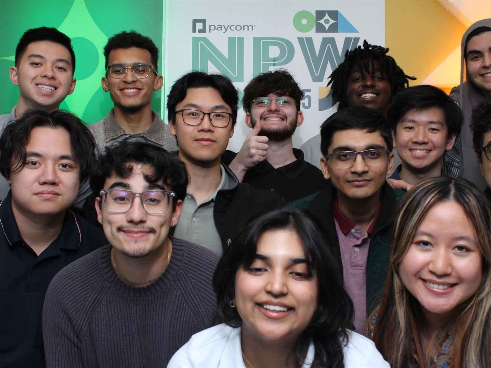
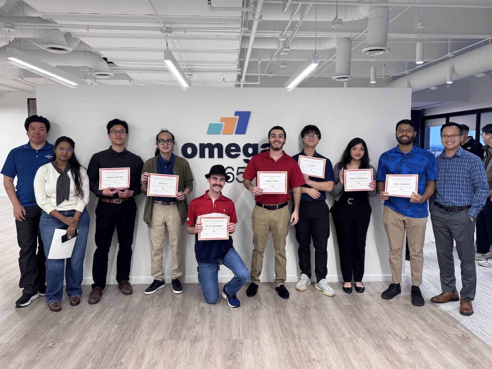

Software Engineer & Web Developer
Hello, my name is Thomas! I'm full-stack software engineer with experience shipping real-world code to production
Through my professional work, internships, coursework, and personal projects, I have gained expertise various programming languages, including TypeScript/JavaScript, Python, Java, PHP, and many others. I am also knowledgeable about software design, web application security, and modern full-stack web development. I've written many APIs in various languages, and I'm especially proficient in building web applications with HTML, CSS, React, Redux, Vue, Vuex, Next, Express, Angular, Spring Boot, jQuery, Tailwind, and Vitest, with a consistent focus on creating beautiful user interfaces and friendly user experiences. I'm eager to contribute my expertise and knowledge to the field of computer science, and I am always seeking new opportunities to learn and grow!
My professional working experience
I have worn many hats throughout my career. I have over 5 years of professional experience tutoring STEM subjects and have also been a TA at my university for two semesters. However, I'd like to highlight my most relevant experiences. The listed jobs below are the ones that I am the most proud of.


Revature
Software Engineer
Aug 2026 - Present
- Architected a secure CLI banking application using Java and PostgreSQL to handle large inflows of user transactions
- Implemented comprehensive unit testing suites using JUnit to validate core banking workflows and integrated structured logging with SLF4J/Logback to track user activity, audit transactions, and streamline debugging
- Designed robust relational database schemas and implemented Data Access Objects (DAOs) utilizing JDBC and prepared statements to ensure ACID compliance and prevent SQL injection
- Engineered custom exception-handling mechanisms and strict input-validation pipelines to gracefully manage edge cases, prevent application crashes, and secure transaction rollbacks
SkillStorm
Agentic AI Developer
Aug 2026 - Aug 2026
- Architected multi-agent workflows using LangGraph and LangChain on AWS Bedrock AgentCore, leveraging stateful graphs to enable autonomous tool use, multi-step reasoning, and dynamic task delegation
- Engineered high-throughput backend APIs with Python and Flask, optimizing asynchronous request execution and standardizing service interfaces for client integrations
- Optimized database performance and data persistence by designing relational schemas in PostgreSQL and implementing efficient query patterns and migrations via SQLAlchemy
Paycom
Software Developer III
Jun 2025 - Feb 2026
- Redesigned core backend PHP and SQL infrastructure, reducing data processing times by up to 100x to achieve significantly faster data throughput Optimized a React SPA's internal state management, reducing page load times by an average of 50% and improving performance and responsiveness
- Architected high availability microservice APIs with PHP and Docker to support Paycom's 37k+ clients and implemented automated test suites using GitLab CI/CD, ensuring 100% critical code path coverage to achieve reliable uptimes, reproducible container builds, and consistent deployments
- Refactored slow database queries by reordering/optimizing SQL statements and replacing ORM-based inserts with batch SQL operations, eliminating redundant queries and unnecessary database round trips to significantly accelerate execution times by 2-3s
- Investigated and resolved high-impact production issues by performing root cause analyses and deploying bug fixes to improve system reliability
- Collaborated with security analysts to fix critical security vulnerabilities such as XSS, BAC, IDOR, and SQLi, consistently maintaining SLA compliance
- Created and maintained critical codebase documentation supporting 1k+ developers, significantly reducing onboarding and debugging time
Paper.co
Full Stack Engineering Intern
Jun 2025 - Aug 2025
- Built robust Laravel backend services with comprehensive PHPUnit testing integrated into CI/CD pipelines to ensure reliable deployments
- Engineered an API with PHP and MySQL to efficiently support 1M+ daily transactions, ensuring scalable and reliable long-term data growth
- Created 20+ scalable, type-safe front-end components with Vue, Tailwind, and TypeScript, delivering visually appealing and high-performance UIs
- Developed comprehensive front-end test suites using Jest to improve component reliability, increase product stability, and reduce bugs before release
Omega 365 USA
Software Developer Intern
Mar 2025 - May 2025
- Designed and optimized a scalable, well-normalized MySQL database schema, ensuring efficient data storage and retrieval
- Implemented robust database security measures, including role-based access control (RBAC), user permission hierarchies, and data segregation
- Developed a responsive front-end web application using Vue & Highcharts to seamlessly interface an internal API and proprietary backend system
- Engineered a scalable full stack React and Express web application, adhering to DRY principles to reduce code duplication by ~94%
Paycom
Application Security Intern
May 2024 - Aug 2024
- Performed extensive code reviews and revisions with a team of mentors, successfully fixing 6 vulnerabilities with a focus on future maintainability
- Conducted a comprehensive black-box web security assessment that culminated in a detailed report listing 19 findings with suggested remediations
- Identified and exploited 8 real-world web vulnerabilities in a white-box penetration test on Paycom's internal web application, opened tickets to report and document findings, and recommended remediation techniques to enhance the security posture of Paycom's website
- Created an intentionally vulnerable web application using PHP, JavaScript, and MySQL to demonstrate 4 of the most critical web vulnerabilities, showcasing strong knowledge about web development and application security best practices